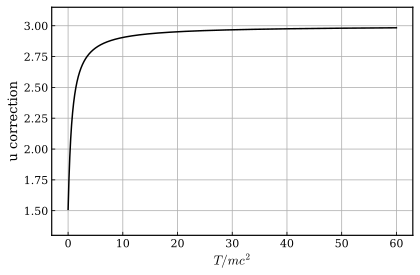
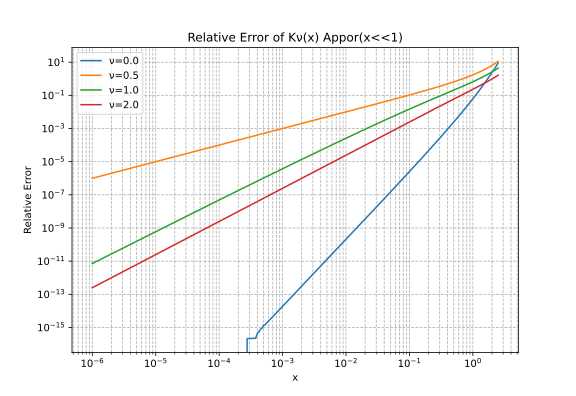

Jüttner分布
相対論的な理想気体の分布関数。本記事では、Jüttner分布をまとめ、計算に必要となる第二種変形ベッセル関数に関連する事項を整理する。
- 粒子の運動エネルギー\(E\)が静止質量\(m c^2\)に漸近してくると、非相対論的なエネルギーの表式\(E = mv^2/2\)よりも、相対論的なエネルギーの式\(E = m_e c^2 (\gamma-1)\)が用いられるべきだ。
- 理想気体を構成する粒子の典型的なエネルギーが相対論的領域にあるとき、非相対論的なエネルギー式を用いたMaxwell速度分布関数は、実際の理想気体の統計からずれてくる。
- Ferencz Jüttnerは1911年に熱平衡状態にある相対論的な構成粒子の速度分布関数を顕に書いた。
- これはJüttner(ユトナー)分布、あるいはMaxwell-Jüttner分布と呼ばれている。

Maxwell-Jüttner分布の表式
質量\(m\)、絶対温度\(T\)の理想気体の熱分布は以下で与えられる。
- \(k_B = 1, c= 1\) : Boltzmann定数と光速を1とする。
- \(T\) : 絶対温度(熱統計的な温度)
- \(m\) : 注目する粒子集団の質量
- \(a = m/T\): 静止質量で規格化した逆温度。
- \(\Theta = T/m = 1/a\): 規格化温度。
- 分布関数は積分が1になるように規格化されている。
- \(K_{\nu}(x)\): 第二種変形ベッセル関数
- \(\gamma\): ローレンツ因子
- \(v = \sqrt{1-1/\gamma^2}\): 質点の速さ
- 多くの場合、バルクに含まれる最小質量の粒子集団は電子であるから、電子の静止質量\(m_e\sim511 \rm{keV}\)が相対論的レジームの温度\(T\)の相場となる。
- ブラックホールコロナ、初期宇宙、相対論的レーザー生成プラズマなどに実現する。
- 高エネルギーのバルクでは対生成・対消滅や輻射の放出再吸収などで、Jüttner分布からずれてくることがある。
カノニカル統計からの導出
\(\,\,\,\)ここでは、相対論的領域においてカノニカル統計が適用できるものとして、理想気体の分布関数を計算し、Jüttner分布が導かれることを確認する。
- 温度Tの熱浴に接して、体積Vの範囲に閉じ込められた、N個の質量\(m\)の粒子を考える。
- マスはon-shell条件を満たしている。\(p_\mu p^{\mu} = m^2\)
- \(u^{\mu} = p^{\mu}/m\) : 4元速度
- 温度は対応する密度\(n = N/V\)のフェルミエネルギー\(\epsilon_F(T=0,n)=\frac{h^2}{2m}(\frac{3n}{8\pi})^{2/3}\)よりも十分高いものとして、縮退効果は考えない。これはFermi統計の高温側の極限に対応する。
カノニカル統計の処方箋より、位相空間(x-p)上の分布関数は
- 分配関数(\(Z_N(a,V)\)=上式の規格化因子)は一粒子分配関数\(z(a)\)の積として書ける。
- 一粒子分配関数は第二種変形ベッセル関数を使って書ける。
ただしここで、第二種変形ベッセル関数は以下のように与えられる。
位置座標を積分してしまって、一粒子の分布関数は、運動量空間\(p\in[0,\infty]\)、エネルギー空間\(\gamma \in [1,\infty]\)、速度空間\(v \in [0,1]\)でそれぞれ、
整理すれば、(記号fを乱用するが、異なる関数を指していることには注意)
運動量分布関数 \((u_x,u_y,u_z) \in [\infty,\infty]^3\)
運動量絶対値での分布関数 \(u \in [0, \infty]\)
エネルギー分布関数 \(\gamma \in [1,\infty]\)
速さの分布関数 \(v \in [0,1]\)
熱力学的諸量
粒子集団の運動量中心系(運動量の総和が0になる慣性系、Center of Momentum Frame)において熱力学的な操作を認めると、それに応じて熱力学的な諸量を定義できる。
運動エネルギーを相対論的な表現に変更したことによる、非相対論的表現とのずれを意識するとよい。例えば、状態方程式は本質的に一致する。比熱が3に漸近するなど。
ヘルムホルツの自由エネルギーF(T,V)
- 分配関数を適当な状態数の測度(例えば、\(\hbar^{3N} N!\))で割って無次元化する。
- 完全な熱力学関数としてのヘルムホルツ自由エネルギーが得られる。
- \(N \to \infty\)
- \(N\)に比例する、示量変数としての自由エネルギーが得られる。
- 分配関数のエネルギー評価で、静止質量を引いて運動エネルギーを使うと\(\gamma \to \gamma-1\)、自由エネルギーの対数の引数にexp(a)の因子がつく。これは対数項の外に出すと、\(-NkTa = -mN\)となるので、一粒子あたりの自由エネルギーの原点を\(-m\)ずらすだけ。
圧力 p(T,V)
- ヘルムホルツ自由エネルギーの体積偏微分は状態方程式(p,T,V状態量間の拘束)を与える。
- 分配関数の体積依存性はN体の粒子が無相関であるという性質から、\(Z_V\propto V^N\)
- よって、(juttner分布に限らない)一般の理想気体で理想気体の状態方程式が成立する。
運動論からの圧力導出
運動論の立場では、圧力とは運動量輸送テンソルの対角成分である。この考え方から、一般の理想気体で理想気体の状態方程式が成立することを確かめてみる。
- エネルギーが運動量の適当な関数であるとする。\(E(p)\)
- 運動量分布関数がカノニカル分布で書けるとする。
- 粒子速度を与える分散関係は
Note
これは微視的な仕事とエネルギー変化量の関係を与えていると解釈できる。 構成粒子レベルのミクロスコピックなエネルギー保存が、マクロな視点できちんと熱と仕事の等価性(熱力学第一法則)を満たすような圧力を保証してくれる。
$$ dE = \frac{\partial E}{\partial p_i} dp_i $$
$$ dE = v \cdot F dt = v \cdot dp $$
- 圧力は応力テンソルの空間対角成分で与えられる。
- 分布の等方性を仮定して圧力の表現を得る。
- 積分に登場する境界項は\(\exp(\beta E(p))\)により0になることを仮定する。
E(p) の具体形に依存せず理想気体の状態方程式が成立することをカノニカル統計を仮定した運動論の立場から確認できた。
粒子の平均エネルギーと内部エネルギーU(T,V)
- 粒子エネルギーの平均値は、次のように計算される。
- 途中で第二種変形ベッセル関数が満たす公式を用いている。
- 第二種変形ベッセル関数は次のような公式が成立する。
- 静止質量を含めた平均エネルギー
- 平均運動エネルギー
- 内部エネルギー/内部エネルギー密度
- 非相対論極限は普通静止質量の分を含まないので、低温側で一致させるためには1を差し引くとよい。
粒子の運動エネルギー期待値は非相対論領域では、\(3/2T\)になる。エネルギー密度は\(u=3/2nT\)であった。Jüttner分布では、相対論領域で係数が1.5からズレ始め、強相対論領域では3に漸近する。
- 量子統計においては低エネルギー側でエネルギー等分配則が破れることを学ぶが、高エネルギー側の相対論領域でも、異なる要因によって等分配則が破れる。
以下のグラフは\(u/nT\)の温度依存性を表している。

定積熱容量
- 定積熱容量は体積一定の下での単位温度変化に伴う熱の出入りで、内部エネルギー密度の温度偏微分で計算できる。$dU = Tds - PdV, dV = 0 $
- エネルギー密度の変化から、定積比熱は定数にならず、弱相対論領域では1.5、強相対論領域では3に漸近することがわかる。
- 第二種変形ベッセル関数の公式を参照する。
- これらを使うと、
整理すると、
- 定積比熱として、\(c_V = C_V /N\)を以下に描画した。
- 横軸の範囲は、エネルギー密度のプロットと同じ。
- a=1/5程度で、かなり3に近づいていることがわかる。

等圧熱容量
- マイヤーの関係式が成立する。
- 基本的には、$TdS = dU+pdV = C_V dT + d(pV) = N(c_v + 1)dT $
ただし、以下の関係式を用いた。 - \(dF = -SdT-pdV\)の全微分条件 : \(\frac{\partial S}{\partial V} = \frac{\partial p}{dT}\) - 偏微分の関係式 \(\partial_x f(x,y)/\partial_y f(x,y) = -(\partial y(f,x)/\partial x)_f\) - 状態方程式 \(p(T,V) = NT/V\)
エントロピー S(T,V)
- 自由エネルギーF(T,V)の温度偏微分として与えることができる。
- 先に内部エネルギーU(T,V)を計算しているので、\(S = (U-F)/T\)から求めてもよい。ただし、その際にはエネルギーの原点に関して静止質量の有無に注意する。
比熱の振る舞いが高温極限で3に漸近することを思い出すと、エントロピーは比熱の温度積分に対応しているはずなので、非相対論的なエネルギー式との比較において、(T,S)プロットをした際に高温側でグラフの傾きがズレていくと考えられる。 これは対数増加の部分\(\ln{(K_2(a)/a)}\)に現れる。
-
高温極限(\(a\ll 1\))で、\(K_2(a)/a \to a^{-3}/4 \propto T^{3}\)
-
低温極限(\(a\ll 1\))で、 \(K_2(a)/a \to \propto e^{-a}a^{-1.5} \sim \propto T^{1.5}\)
-
いずれも\(s\sim c_v\ln{T} + s_0\)の形で漸近することがわかる。
- 比熱の違いは、許される状態数の変化の仕方に対応している。
断熱変化・等エントロピー過程
断熱変化はエントロピーを一定に保つ準静的な変化である。\(TdS = 0 = dU+pdV\)。対応する状態変数間の拘束関係は、
- 右辺は温度だけの関数である。以下に右辺を(T,V)のlog-logプロットで示す。Vは温度の単調減少関数で、\(T/mc^2\sim0.2−0.3\)付近からべき的な依存性が変化しているように見える。 これは比熱比\(c_p/c_v\)の変化として解釈できる。

- 高温極限\(a\ll1\)では、\(K_1\to 1/(2a), \,K_2\to 1/(4a^2)\)なので、
- これは、比熱比\(c_p/c_v=4/3\)に対応している。
- 一方、低温極限\(a\gg1\)では、主要項で\(K_{\nu}\to \sqrt{\pi/2a}e^{-a}\)なので、
- これは、比熱比\(c_p/c_v=5/3\)に対応している。
ギブス自由エネルギー\(G\)と化学ポテンシャル\(\mu\)
ギブス自由エネルギーは粒子数の比率でスケールするので、ギブス自由エネルギーと化学ポテンシャルは\(G=N\mu\)を満たす。
ここでの表記は静止質量を含めているので注意する。
エンタルピー\(H\)
低温領域での振る舞いと相対論領域へのシフト
Jüttner分布は低温側の極限で、非相対論的なエネルギー式を用いたMaxwell分布に漸近する。遷移の目安は規格化温度\(\Theta= 1/a = T/m c^2 \sim 1\)付近である。ここでは、これらを比較しよう。
\(K_2(a)\)は\(a\gg 1\)側での漸近表現として、
- Jüttner分布の表式に対して上記の近似式を用いると、\((\epsilon = \gamma-1)\)
以下に、非相対論的なエネルギー式を用いたマクスウェル分布を記載。
- 近似の主要項が非相対論的なエネルギー式を使ったmaxwell分布と一致することがわかる。
温度変化に対する分布関数のシフト
非相対論的なエネルギー式のマクスウェル分布は、横軸を対数にしたときに面積が保存するような変換で、\(T/E=a\epsilon\)の関数として書ける。
この性質は、エネルギー分布関数を描画する際に便利である。
-
\(X = \ln{E}, Y = dn/dE*E = df/d(\ln{E})\)で描画すれば、温度の異なるマクスウェル分布は、グラフ上での形が同じまま、\(X=\ln{E}\)方向にシフトする。
-
分布の最大値は形状を表す関数\(h(x)\)の極大値に対応しており、その座標は\(x_M=3/2\)である。すなわち最大値の座標点のエネルギーが温度の1.5倍に対応している。
ただし上記は非相対論的領域のみで成立する。

相対論的な温度に差し掛かると、\(a\epsilon\)の関数としては書けなくなるので、等面積の領域が少しづつ歪んでいく。(上図に異なる温度のJüttner分布を描画。)
第二種変形ベッセル関数
諸量の計算では第二種変形ベッセル関数\(K_{\nu}(a)\)が登場するが、\(\nu\)が整数のとき、微分を含む式や、\(\nu=3\)以上の\(K_{\nu}(a)\)は漸化式を用いて、\(\nu=1,2\)の計算に落とすことができるので、 \(K_1(a), K_2(a)\)の振る舞いを知っているとよい。
\(K_{\nu}(a)\)の定義
いくつかの方法で\(K_{\nu}(a)\)を定義できる。定義の仕方によって、定義域が異なるので注意。 \(\nu\)は一般に実数である。
- 第二種変形ベッセル関数の積分表示
- \(Re(a)>0\)
- \(Re(\nu)>-1/2\)
- \(z(z^2-1)^{\nu-\frac32}\)部分の部分積分で以下二式は等しいことを確認可能。
- \(Re(a) > 0\)
- \(\nu\)は任意
\(K_\nu(x)\)は変形ベッセル微分方程式を満たす。
便利な公式。

近似
- 以上のグラフにあるように\(x>0\)の実軸上では、正で単調に減少する関数である。
-
\(x=0\)でべき的に発散し、\(x\gg1\)で指数的に減衰する。
-
\(a \gg 1\)
- \(a\ll 1\)
- より高精度の\(K_{0}(x)\)の\(x\ll 1\)漸近展開は：
- \(\gamma\) : euler定数
- K_nu(x)近似式(x<<1)の相対誤差評価
\(|(K_{\nu} (x) -approx(x))/K_{\nu}(x)|\)の描画。

最終更新日:2026 01 13